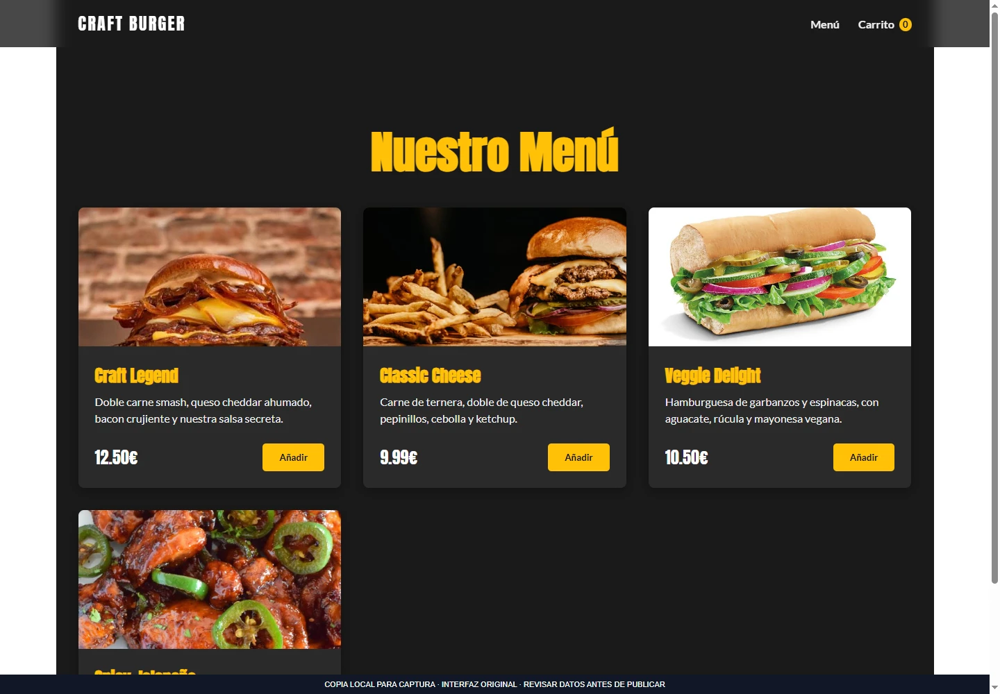
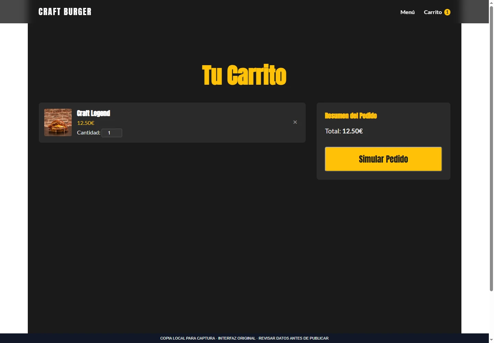
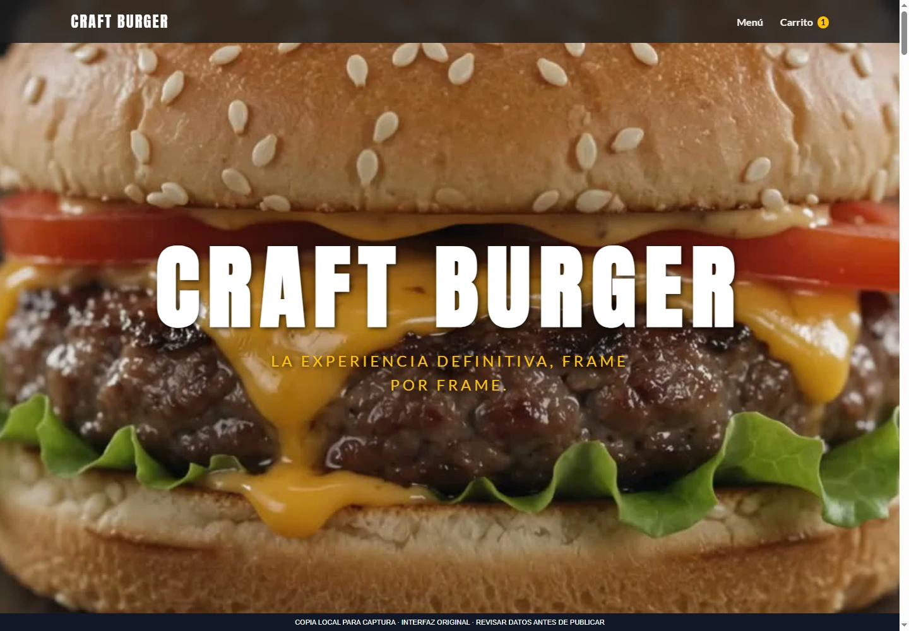

Saltar al contenido
Saltar al contenidoExperiencia web de hamburguesas
Sitio gastronómico con animación por desplazamiento, menú y carrito persistente.

Ampliar imagenEl proyecto
Experiencia web de hamburguesas que combina una presentación visual animada con menú y carrito de productos.
Permite elegir cantidades y consultar un resumen de pedido persistente en el navegador. El recorrido se centra en la interfaz y no incluye un backend de cobros o pagos reales.
Funciones principales
- Animación mediante secuencia de imágenes
- Menú de productos
- Carrito y edición de cantidades
- Resumen del pedido
Galería del proyecto
3 imágenes · en el orden seleccionado
Selecciona una imagen para ampliarla. Usa las flechas para recorrer la galería.



Ampliar ↗

Ampliar ↗EN LA PRÁCTICA
Del menú al carrito
- 1
Explorar el menú de hamburguesas.
- 2
Añadir productos y ajustar cantidades.
- 3
Consultar el resumen o probar la simulación del pedido.
Los productos del ejemplo son ficticios y no se envían pedidos.
Probar ejemplo de uso ↗Abre primero el gestor local con python tools/manage_media.py.